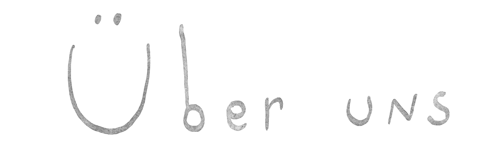

Opera Opaque is a music theatre collective made up of director Maria Chagina, composer Leon Zmelty, designer Anna Agafonova, and dramaturg Sören Sarbeck. Going back to their shared time studying at the Bavarian Theatre Academy August Everding in Munich, they have spent the past several years exploring the border territory between opera, performance, and concert.
With Invitation to a Beheading, based on the Vladimir Nabokov novel of the same name, their first opera premiered in 2024 at Munich's Reaktorhalle, receiving both local and national attention and praised by the Süddeutsche Zeitung as »a new theatre for a new era«. In the concert performance Seidenkoffer, the members of Opera Opaque stood on stage together for the first time, working – starting from poems by Rose Ausländer – through their own biographies between art and migration in a richly varied evening of song. Maria, Anna, and Sören were also finalists at the 2025 Ring Award opera directing competition in Graz, where their version of Claudio Monteverdi's L'Orfeo won both 2nd prize and the newly introduced Dramaturgy Prize.
In the 2026/27 season, Opera Opaque will realise several works within Munich's independent theatre scene: In December 2026, the staged concert Propellerinsel, freely adapted from the novel of the same name by Jules Verne, premieres at Einstein Kultur. Written for the musicians of the Zentaur Quartet, the piece asks what place music has in a fascist future shaped by libertarian ideology. In February, the performance Phantom, developed together with actor Luca Skupin, follows at HochX, examining how our biographies inscribe themselves into our voices. For summer 2027, a collaboration with the aDevantgarde Festival Munich is planned. In April, Maria, Anna, and Sören will also direct Georg Friedrich Handel's Alcina at Theater St. Gallen.